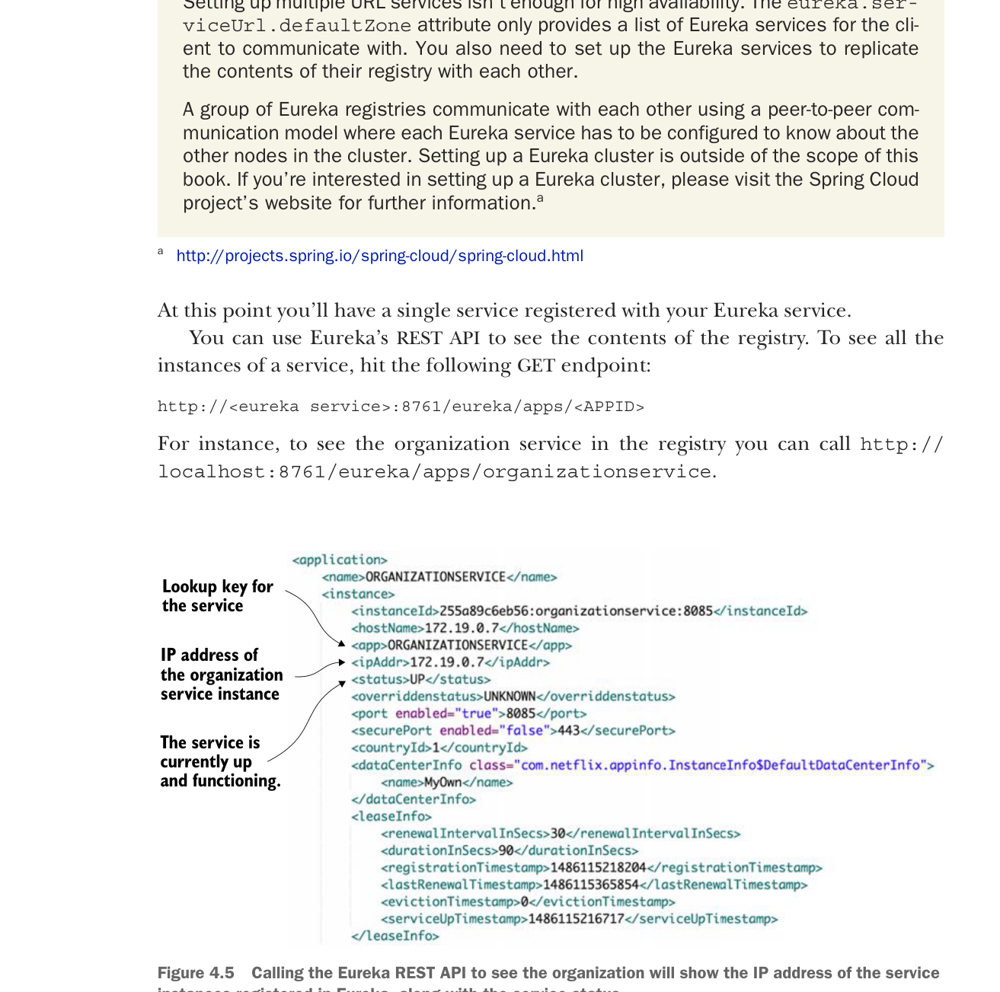

Thuộc tính cuối cùng, thuộc tính eureka.serviceUrl.defaultZone, chứa danh sách các dịch vụ Eureka phân tách bằng dấu phẩy mà client sẽ dùng để phân giải vị trí dịch vụ. Với mục đích của chúng ta, bạn chỉ cần một dịch vụ Eureka.
Tại thời điểm này, bạn sẽ có một dịch vụ duy nhất được đăng ký với dịch vụ Eureka của bạn.
Bạn có thể dùng REST API của Eureka để xem nội dung registry. Để xem tất cả các instance của một dịch vụ, hãy gọi endpoint GET sau:
http://<eureka service>:8761/eureka/apps/<APPID>Ví dụ, để xem organization service trong registry, bạn có thể gọi http://localhost:8761/eureka/apps/organizationservice.

Gọi Eureka REST API để xem organization service sẽ hiển thị địa chỉ IP của các instance dịch vụ đã đăng ký trong Eureka, cùng với trạng thái dịch vụ.